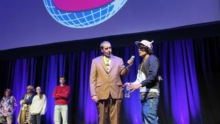
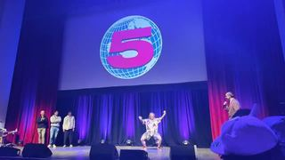
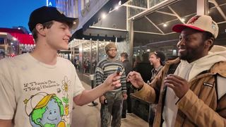
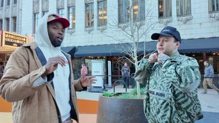
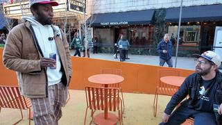
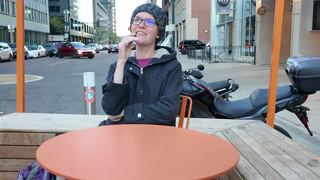
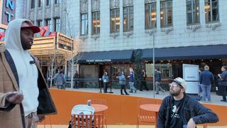

Channel 5 Carnival, Denver
Andrew Callaghan’s Carnival is part talent show, part town hall, part variety show. Performers sign up from the crowd, step on stage, and the audience decides who moves on by decibel level. We filmed it from the floor, from the balcony, and in the line outside, where the conversations were as raw as anything that happened on stage.
The lead piece. Maceo on stage with Andrew Callaghan · Denver, 2026
The line wrapped around the block. That is the part worth saying first, because it explains the rest of it. People queued for hours to get into a room where the format is that anyone can sign up, anyone can get the microphone, and the crowd decides by how loud it gets. Andrew got tattooed during the show, screened a forbidden video, asked hypotheticals, and otherwise let people talk.
Maceo on stage
Second time at a Channel 5 Carnival. The first was Pittsburgh in 2023, with Funky Close and Isaac. In the piece above he asks Andrew the We Them Media question of the week: what is something that made you smile? Andrew’s answer was that the bad guy from the Finding Person documentary turned up at the LA screening and did not tell him he likes films. Maceo’s was going home Thursday to see his niece and nephew after five weeks in Denver. Then he freestyled: Nigeria’s electricity crisis, the bounty programme, and being back on that stage.

The question of the week, put to the room
The same question turned outward: what is a question you would ask people around the world? A flexible man performed contortions. Three winners were announced, heading to the next stop in Pueblo, Colorado.
The talent show
Sign up from the crowd, perform, and the decibel meter decides. Three acts went through to Pueblo.

A comedy rap about socks, and a first time on stage
A rap therapist from unincorporated Denver City had never performed live. He came with bars and with props, and handed a pair of socks to an audience member mid-song.

Fruit Eyes play acoustic, then an intermission for a tattoo
A Denver indie rock band playing an original. The show then paused, in the host’s words, for “a quick 5 to 10 minute intermission while Andrew finishes getting his tattoo.”

Art activism, and a comedian’s edibles story
A comedian on eating edibles in Atlanta and coming home past curfew to his Christian mother. Then a member of an art collective on the group's art activism project: canvases set up in Deep Park for kids to paint without fear of authority, and a piece called Shade of Deep about communities building their own shade after the city removed it. “We don’t need the government to do that. The people can come together and we can do it ourselves.” He closed with a song about family and loss.

A contortionist nobody was ready for
Full flips and zombie poses. “He’s fully flipped. Wow. Oh my god. You did a great job.”

Freestyle, spoken word and dance, back to back
A spoken word piece on an immigrant father’s mental health: “Son, restoration is a journey. It’s a journey of repairs and replacements. Some parts of me have to stay and other parts of me they have to change. But I am still the same vehicle.” Andrew put his hypotheticals to the room. E danced to 6’7. George Raaton freestyled on topics thrown from the audience: gentrification, mass surveillance, and Vail Corporation buying up ski country.

A Neutral Milk Hotel cover, shot from above
The same room from the balcony seats. Full stage and crowd from an angle the floor does not get.

The format, from above
Footage of the talent show running. Performers compete, and the winner is decided by crowd volume, measured in decibels.
The conversations outside
The people who show up to a Channel 5 show are the story. Everything below happened in the line.
Why people trust independent media
Every conversation outside came back to the same thing: people are tired of being handed a programme, and they trust what Andrew does because he listens.

An Irish fan and an aspiring journalist on independent media
An aspiring journalist put it plainly: “Andrew listens. That’s why he gets the best conversations.” An Irish fan on Irish language revival content and the Shia LaBeouf interview. The conversation ran through Nigeria having less than twenty hours of electricity, equity, and forest fires in Nebraska. “Are we really going to settle for this program we’re being fed?” Asked what keeps her going when things are dark, she said gardening. Tulips in bloom.

Documenting war from all sides
Two fans on archiving a conflict from every perspective rather than one. “Channel 5 is the best news on this planet. He gets deep, gets both sides, and just lets people talk.”

Which Denver stories are going uncovered
A fan in the line, asked what is not being covered enough and what Andrew Callaghan could do justice to, had no answer. Maceo’s reply: “There’s no pressure to have answers to the question. The goal is to ask a lot of people.”
Spirituality, free will, and what matters

A hitchhiker on a spiritual mission across America
Alex, born in Texas, later Massachusetts, five weeks on the road and settled in Denver. On what makes Andrew different: he interviews regular people and homeless people, not only celebrities, which is why the line wraps the block. The conversation went to God, faith, and how being homeless accelerated his spiritual growth. He hitchhiked from Massachusetts to Burlington, to New York, and on. “Why don’t we just love each other? We’re just one people.”
Do we have free will?
Two fans arguing whether anything is chosen or the nervous system has already decided. One cited Sam Harris’s Free Will. It moved through grief, learned helplessness, procrastination, and the stories people tell to justify themselves. “Why aren’t you doing what makes you happy?” “Cuz I don’t know that answer, man.”
Independent media as a case study

Immigration, independent media, and Denver’s subcultures
A local filmmaker starting an entertainment and journalism company covering Denver’s underground, plus a food truck grand opening shoot. A crypto conference brought Maceo to Denver, the car broke down, and the work carried on: weekly bounties, with entries so far, as he says on tape, from Nigeria, Kenya, Uganda and India. “This is definitely a case study in independent media and journalism. That’s what Channel 5 is.”
Landscape or portrait, argued by two filmmakers
Two filmmakers ran into each other at the mall and got into how to shoot. Landscape reads better on YouTube, Instagram wants vertical. “I’ve been doing primarily landscape. I put it all on YouTube. If people care they’ll watch it.” “I’ll film you filming me.” “He’ll film me filming him.”
What the fans kept saying
Every fan interview came back to the same thing, that Callaghan lets people talk. Regular people get a stage and a microphone and the audience decides what is worth hearing. Meanwhile Nigeria’s electricity crisis came up in Maceo’s freestyle, in the conversation with Brit, and in the explanation of the bounty programme, whose entries, as he says on tape, had come from Nigeria, Kenya, Uganda and India.
Camera · Maceo, and Tim Palka on the footage Maceo did not shoot himself
Location · Denver, Colorado, USA
Event · Channel 5 Carnival, Andrew Callaghan
Archive · Free on YouTube, no ads, no paywall
Browse the archive Watch, Where we filmed, Topics, Correspondents, One Question, The library
61 people have been asked One Question on camera. This season's campaign runs to Thursday 10 December.